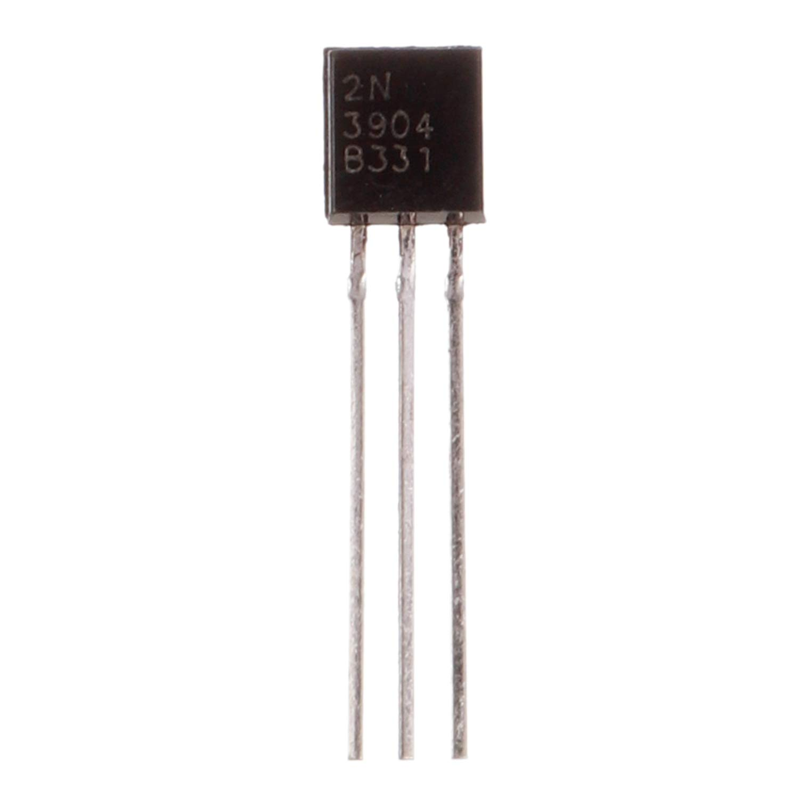

2N2222 Transistor
Quantity: Many
Part / datasheet ↗Full and Half Adder circuits made from 2N2222 Transistors
Digital Logic is fundamental to all electronic devices. To better understand logic gates and how they can be used for computation, I built a full and half adder using only BJT transistors. i saw this project as a prerequisite for later making a transistor only pseudorandom number generator.

Quantity: Many
Part / datasheet ↗Quantity: A lot
Part / datasheet ↗